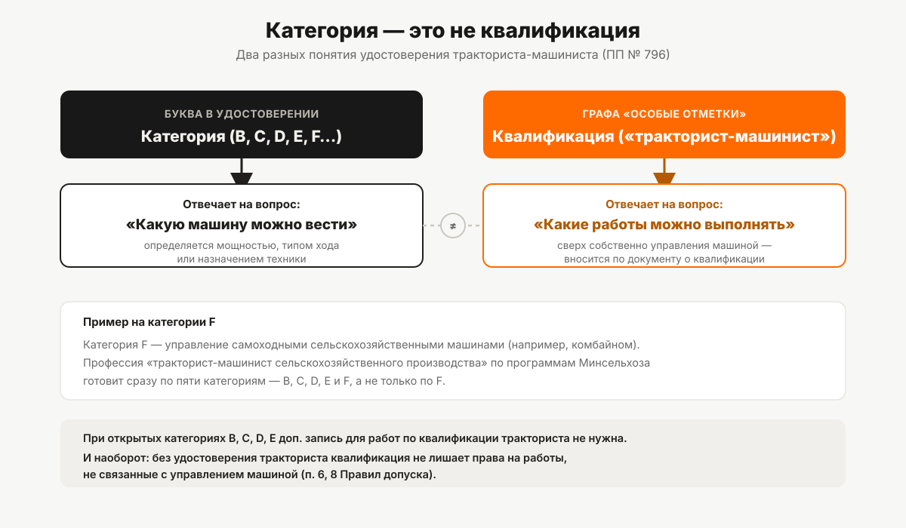

Категория F и квалификация тракториста-машиниста
Комбайны и другие самоходные сельхозмашины — отдельная категория с самой длинной программой обучения. Что даёт квалификация «тракторист-машинист» и как она попадает в удостоверение.
«На комбайн нужна отдельная категория?» — да. А следом закономерно возникает второй вопрос: если в удостоверении и так написано «тракторист-машинист», разве это не одно и то же, что категория F? Нет, не одно и то же — это два разных понятия из Правил допуска к управлению самоходными машинами (постановление Правительства РФ от 12.07.1999 № 796), и путать их стоит ровно там, где начинается разница между «что вести» и «какую работу выполнять».
Категория F: не трактор, а назначение техники
В перечне категорий пункта 4 Правил допуска F определена коротко: «самоходные сельскохозяйственные машины». В отличие от категорий B, C, D и E, которые разводятся между собой мощностью двигателя и типом хода, категория F выделена по назначению техники — сюда попадают комбайны и другая самоходная сельхозтехника, которая физически может не укладываться в шкалу мощности остальных категорий. Если вы собираетесь управлять именно такой машиной — категория F нужна независимо от того, сколько у неё лошадиных сил.
Что такое квалификация «тракторист-машинист сельскохозяйственного производства»
Отдельно от категории в Правилах допуска существует понятие квалификации. В графе «Особые отметки» удостоверения тракториста-машиниста, помимо ограничений, делаются разрешительные записи о наличии квалификации (или нескольких квалификаций) — например, «тракторист-машинист». Это не буква категории, а отдельная строка в документе.
Важная деталь, которую легко упустить: по типовым программам профессионального обучения (приказ Минсельхоза России от 25.07.2022 № 465, действует с 01.03.2024 до 01.03.2030) профессия «тракторист-машинист сельскохозяйственного производства» — это название, под которым готовят сразу по пяти категориям: B, C, D, E и F. То есть квалификация «тракторист-машинист» привязана не только к F — обучение по любой из этих пяти категорий формально готовит именно по этой профессии.
Как квалификация попадает в удостоверение
Правила допуска прямо указывают: основанием для внесения в удостоверение ограничительной или разрешительной записи о квалификации служит документ о квалификации — свидетельство о профессии рабочего или должности служащего. Без этого документа саму запись не внесут.
При этом наличие открытых категорий B, C, D, E уже кое-что даёт без отдельной записи о квалификации: Правила допуска отмечают, что при наличии разрешающей отметки в этих графах не требуется вносить дополнительные записи для выполнения работ, соответствующих квалификации тракториста. А вот обратное тоже верно и важно: отсутствие удостоверения тракториста-машиниста как такового не лишает человека права выполнять работы, не связанные с управлением самоходной машиной, но предусмотренные квалификациями тракториста, тракториста-машиниста или машиниста самоходных машин. То есть квалификация и категория управления — устроены так, что могут существовать и учитываться частично независимо друг от друга.
Особый порядок теории для F и для квалификации «тракторист-машинист»
Экзамен на право управления самоходными машинами включает несколько теоретических блоков, и один из них зависит именно от категории и квалификации, а не общий для всех. Правила допуска разводят два варианта теории по эксплуатации:
- для всех категорий, кроме F, и для тех, кто не получает квалификацию «тракторист-машинист», — теория по безопасной эксплуатации самоходных машин;
- для категории F и отдельно для тех, кто получает квалификацию «тракторист-машинист» (независимо от того, на какую из категорий B–E она оформляется), — расширенный блок теории по эксплуатации самоходных, сельскохозяйственных машин и оборудования.
То есть особый блок теории привязан не только к букве F — он всплывает у любого кандидата, который параллельно с категорией получает саму квалификацию «тракторист-машинист».
Почему у F самая длинная программа
Из всех типовых программ профессионального обучения программа категории F — самая объёмная: 554 академических часа против 450 у категорий B, C, D и E (у всех четырёх — одинаковый итог по программе). Разница почти полностью приходится на два дополнительных предмета в учебном плане F, которых нет у остальных категорий: производственная эксплуатация самоходных сельскохозяйственных машин (на 4 часа больше, чем аналогичный предмет у B–E) и отдельный предмет «Технология уборки сельскохозяйственных культур» (100 часов). Устройство машин, сельскохозяйственные машины как предмет, техническое обслуживание, вождение и квалификационный экзамен по числу часов совпадают с программами B–E.
Что нужно для комбайна, а что для трактора
Если коротко развести практический вопрос — на обычный трактор (в зависимости от мощности и типа хода) нужна одна из категорий B, C, D или E, разбор которых собран в статье «Категории удостоверения тракториста-машиниста». На самоходную сельскохозяйственную машину вроде зерноуборочного комбайна — нужна именно категория F. Квалификация «тракторист-машинист» в удостоверении при этом — не замена ни одной из категорий, а дополнительная запись, которая расширяет круг разрешённых работ сверх собственно управления машиной. Подробнее о том, как устроены квалификации и особые отметки в целом, — в статье «Квалификации в удостоверении тракториста».

Замена удостоверения при присвоении квалификации
Правила допуска описывают два разных административных пути, которые легко перепутать. Замена удостоверения в связи с открытием другой категории или в связи с получением квалификации «тракторист-машинист» производится после сдачи экзаменов — то есть если квалификация оформляется впервые вместе с категорией, экзамен нужен. А вот замена удостоверения в связи с присвоением квалификации в рамках уже открытых категорий (кроме этого случая) производится без сдачи экзаменов — по факту предъявления документа, подтверждающего присвоение квалификации.
Как именно человек получает сам документ о присвоении квалификации во втором случае — отдельная процедура, которая не входит в Правила допуска к управлению самоходными машинами (это уже вопрос профессиональной аттестации, а не приёма экзамена в органе гостехнадзора), и мы её здесь не разбираем.
Частая ошибка: считать F «продвинутой» категорией
Логика «чем дальше буква по алфавиту, тем сложнее техника» здесь не работает. F — не следующая ступень после E, а отдельная категория, выделенная по другому принципу: не по мощности и ходу, как B–E, а по назначению техники. Человек с категориями B, C и D может ни разу не столкнуться с F, если не работает с комбайнами, — и наоборот, тракторист с открытой только категорией F не имеет автоматического права садиться за руль обычного колёсного трактора категории C, если она отдельно не открыта. Официального объяснения именно такой структуре перечня в тексте Правил допуска нет — это следует непосредственно из формулировок категорий, а не из отдельно заявленной логики документа. Подробный разбор учебных планов по предметам и часам всех категорий — в статье «Сколько длится обучение на тракториста».
Перечень категорий, которые заявляет тракторное направление «Авто-Класса», — на странице направления.